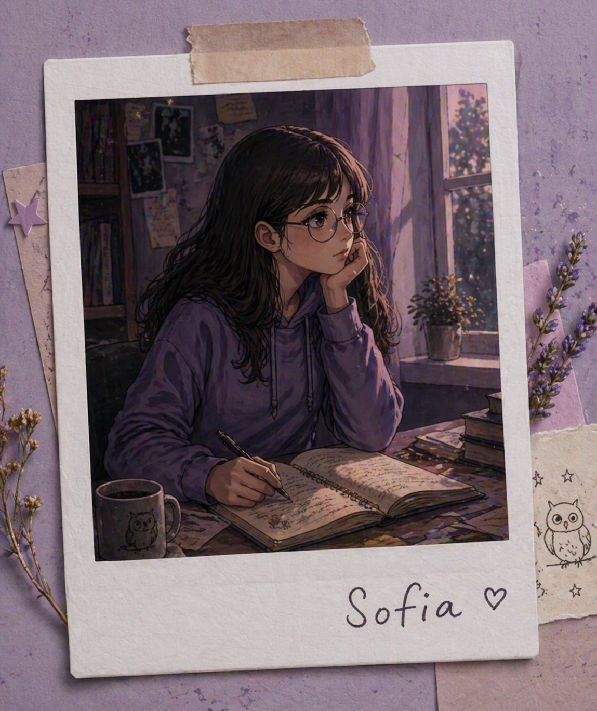
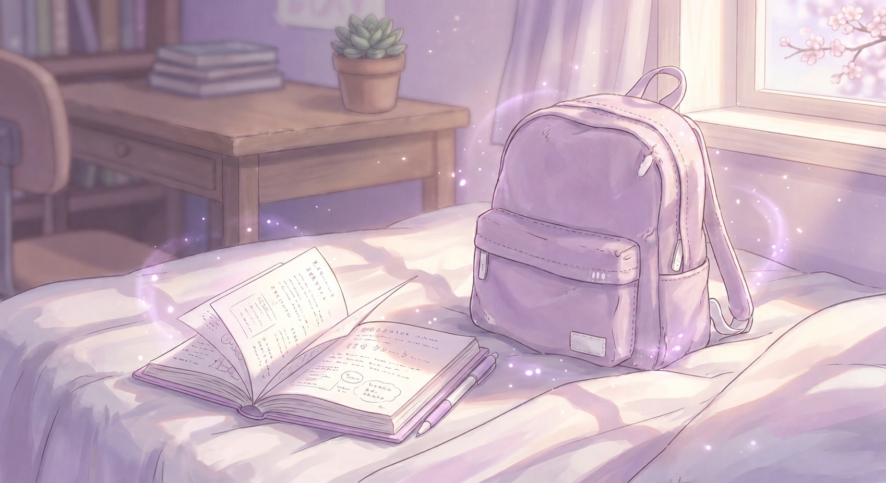
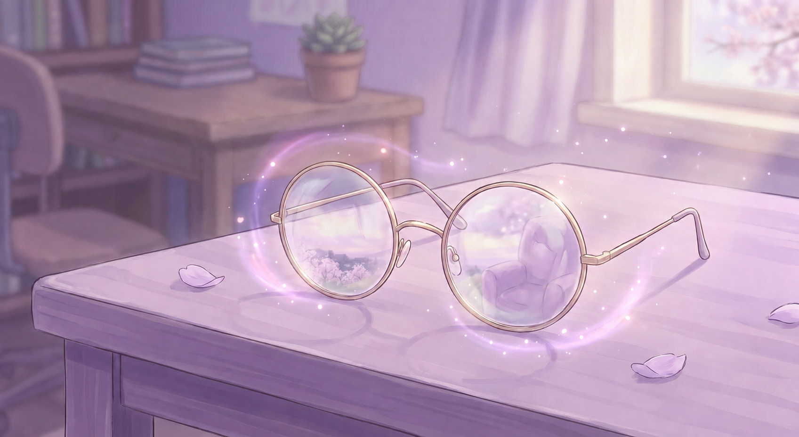
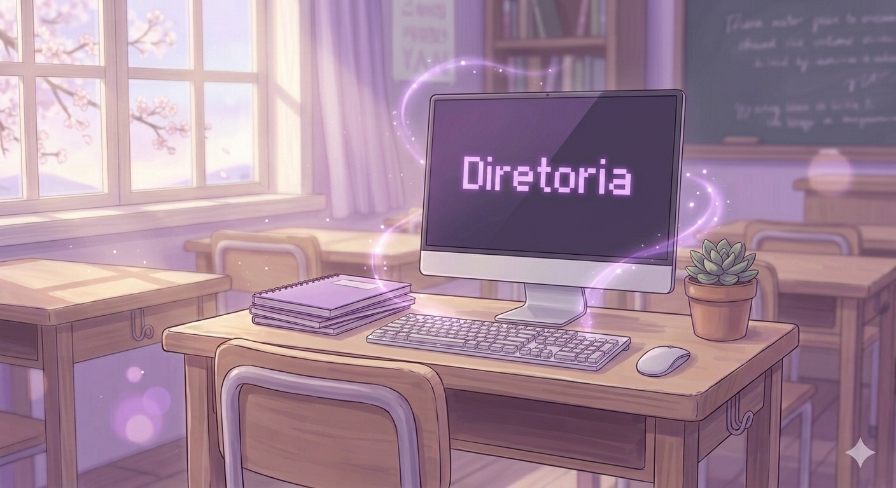
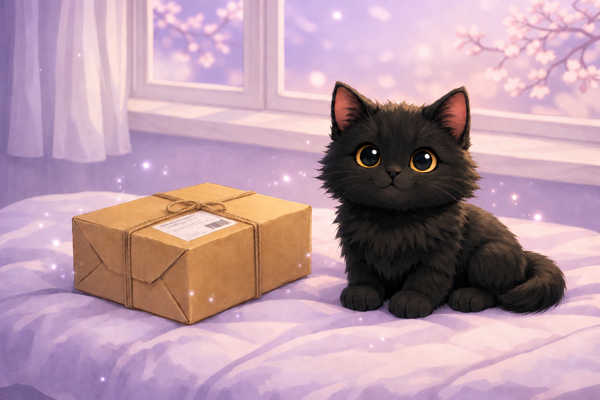
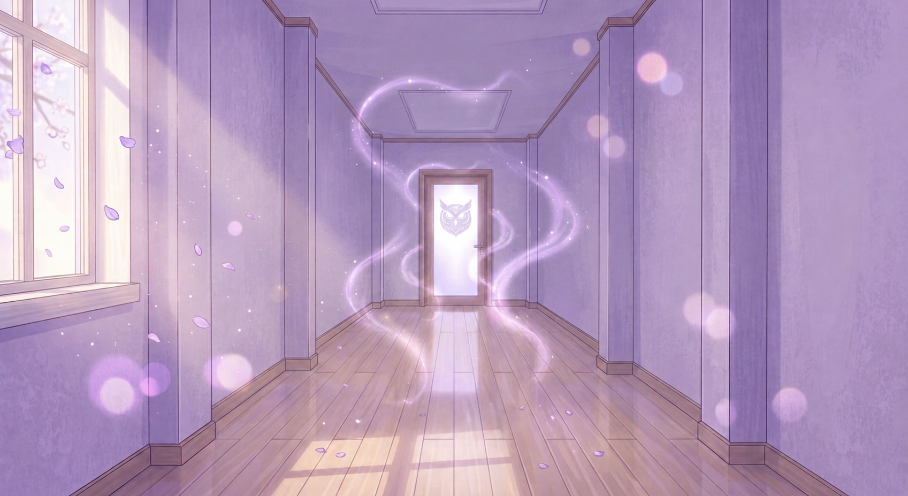
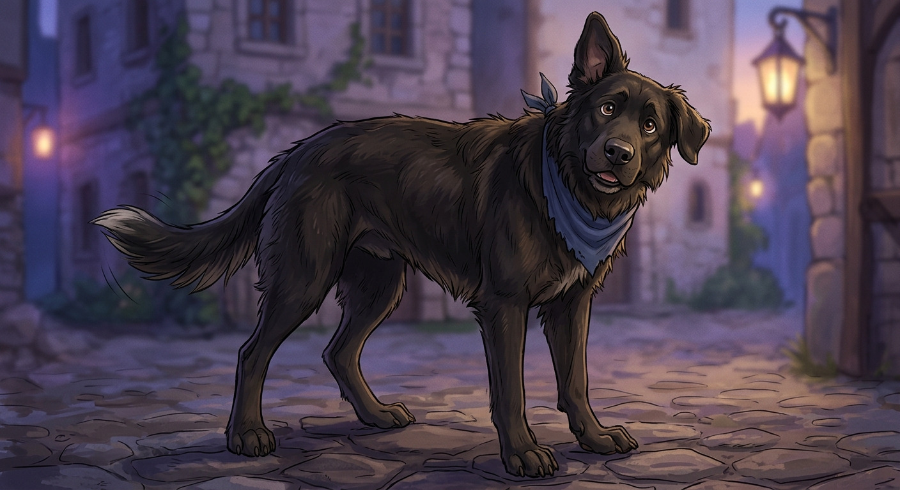
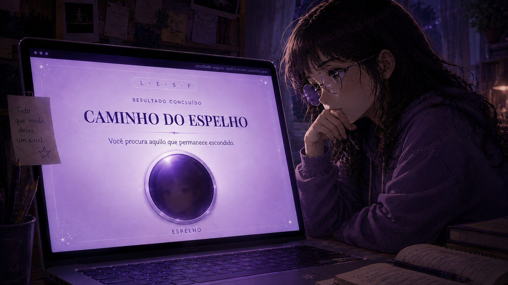

01
01
terça-feira, depois da aula
só um dia normal
Ou pelo menos foi isso que eu pensei antes de olhar para o chão.
ler anotaçãoum blog quase normal
Um lugar para anotar tudo o que eu provavelmente deveria ignorar.
começar pelo começo
nota 00
Tenho 13 anos, quase 14, o que aparentemente deveria me tornar uma pessoa mais responsável. Até agora não funcionou.
Estudo numa escola normal, numa cidade que poderia ser qualquer cidade. Tenho dois melhores amigos, um gato preto e uma habilidade especial para notar coisas que seria muito mais fácil não notar.
últimas anotações
Se alguma coisa aqui parecer estranha, ótimo. Pelo menos não sou só eu.
01
terça-feira, depois da aula
Ou pelo menos foi isso que eu pensei antes de olhar para o chão.
ler anotação
02quarta-feira, teoricamente
O problema é que eu não lembro de ter escrito.
ler anotação
03quinta-feira, depois do sinal
Mas alguma coisa mudou. Odeio quando meu cérebro faz esse tipo de comentário.
ler anotação 04
04
sexta-feira, no ônibus
Não era música. Também não era silêncio.
ler anotação
05segunda-feira, durante tecnologia
O nome era a parte normal. O resto da conversa, não.
ler anotação
06segunda-feira, antes do último sinal
Eu estava tentando descobrir quando ir quando chegou uma coisa que, aparentemente, já tinha sido enviada.
ler anotação
07segunda-feira, depois do último sinal
A escola terminou. O corredor, aparentemente, não.
ler anotação
08terça-feira, entre um latido e outro
Eu estava ignorando o uniforme. Meu reflexo tinha outros planos.
ler anotação 09
09quarta-feira, em duas versões
Começou verde. Depois alguém olhou do outro lado.
ler anotação
10quinta-feira, segundo o teste
Sofia já sabe o resultado dela. O notebook quer saber o seu.
ler anotaçãoatalho desbloqueável
Só algumas coisas que apareceram sem serem convidadas. Isso é completamente diferente.